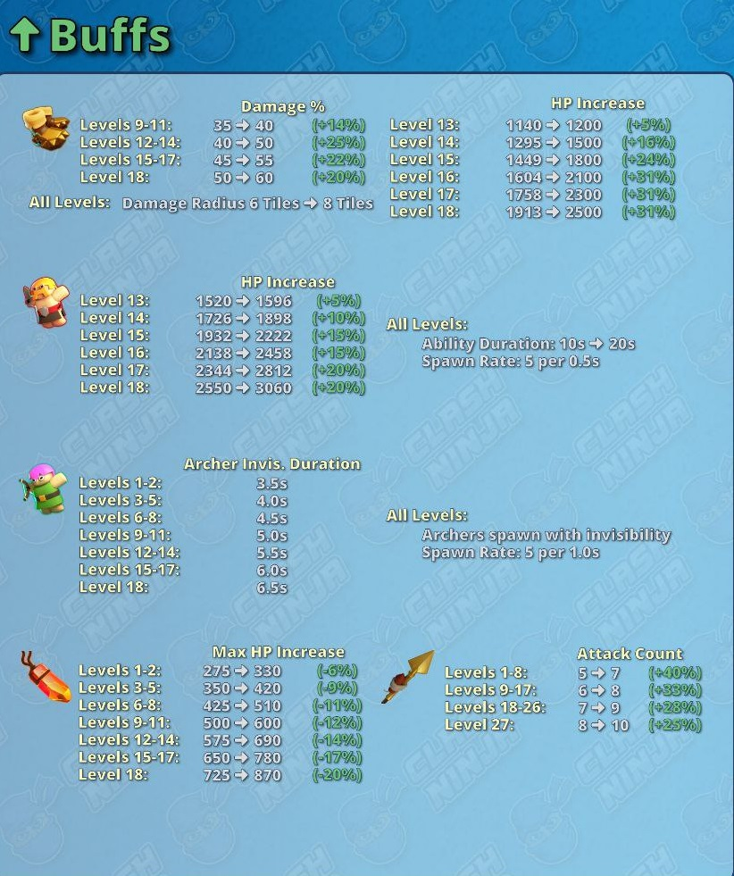
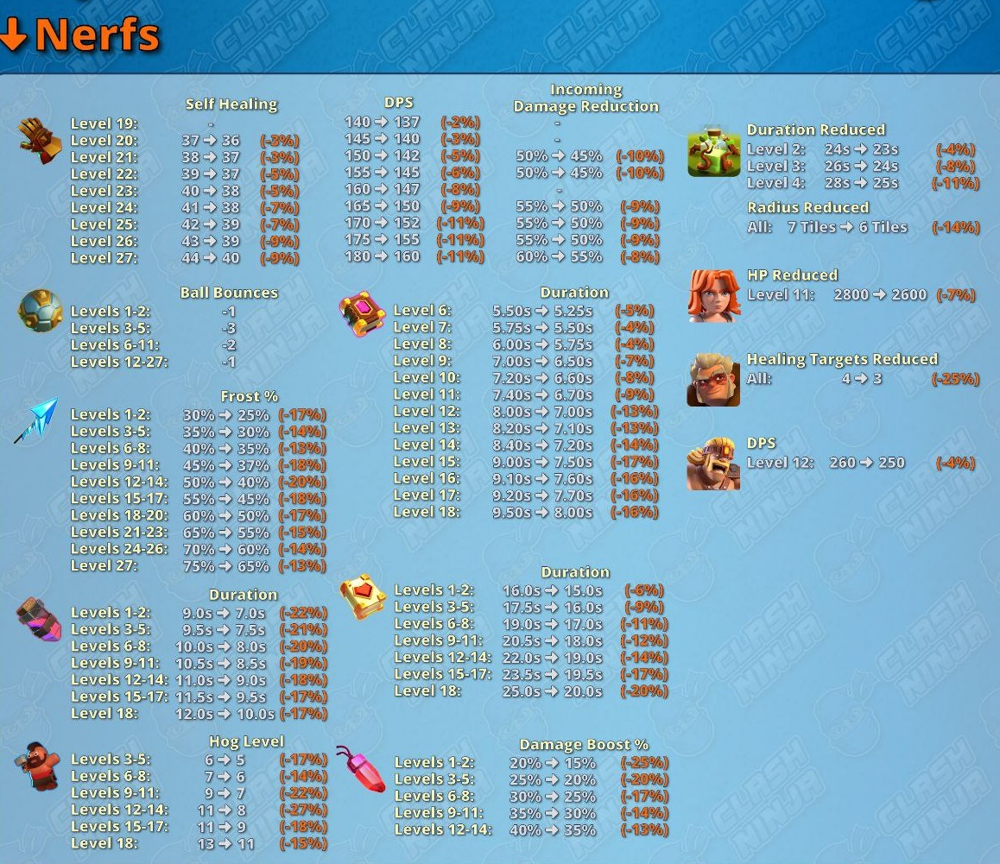
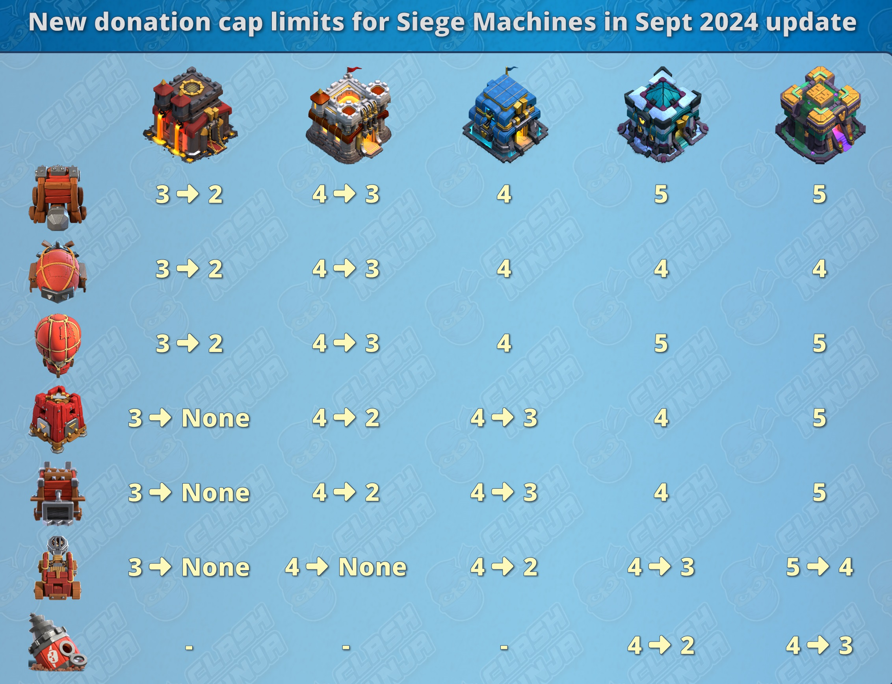
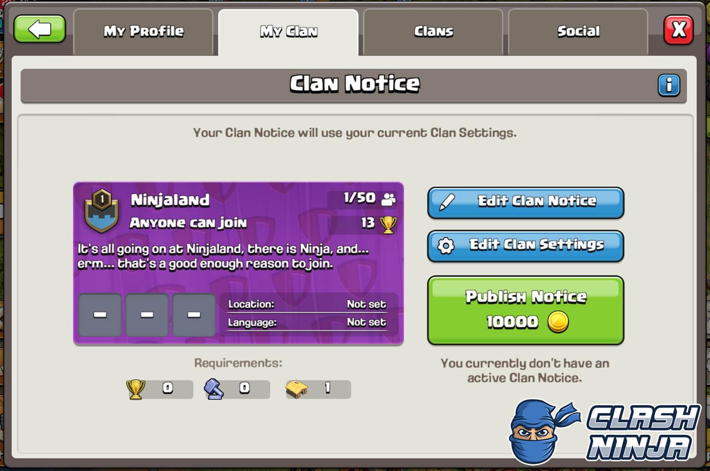
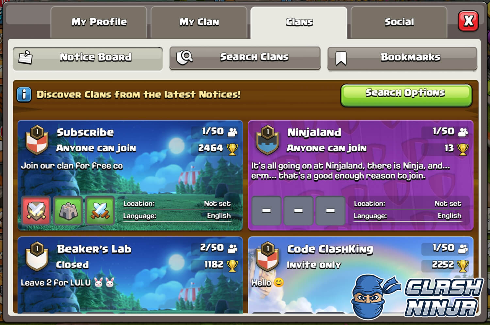
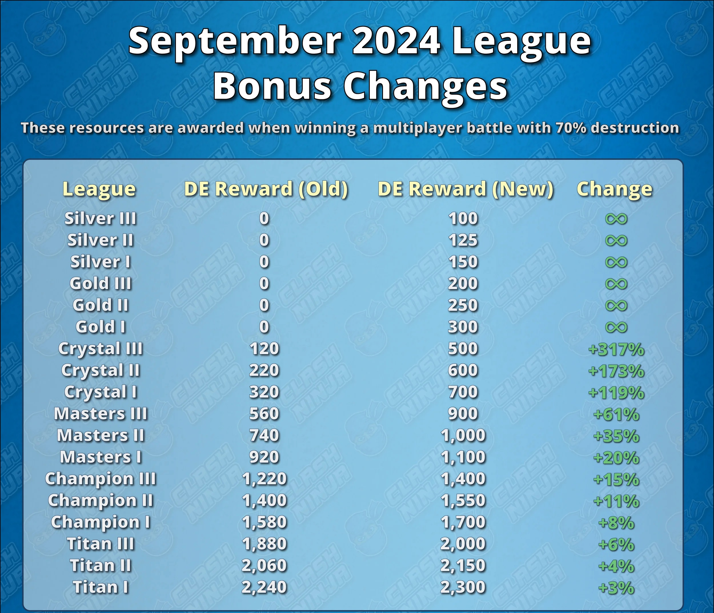
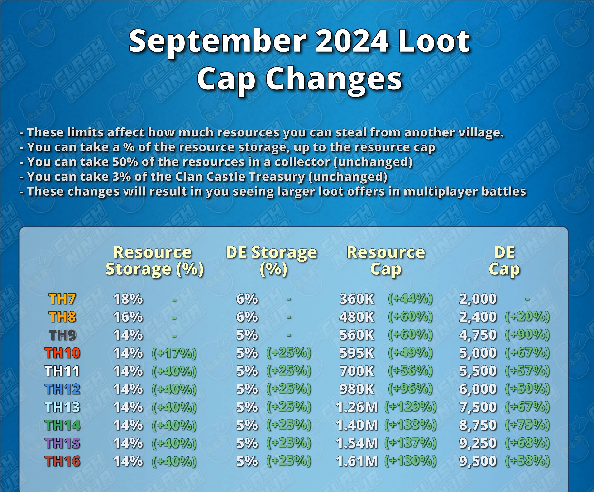
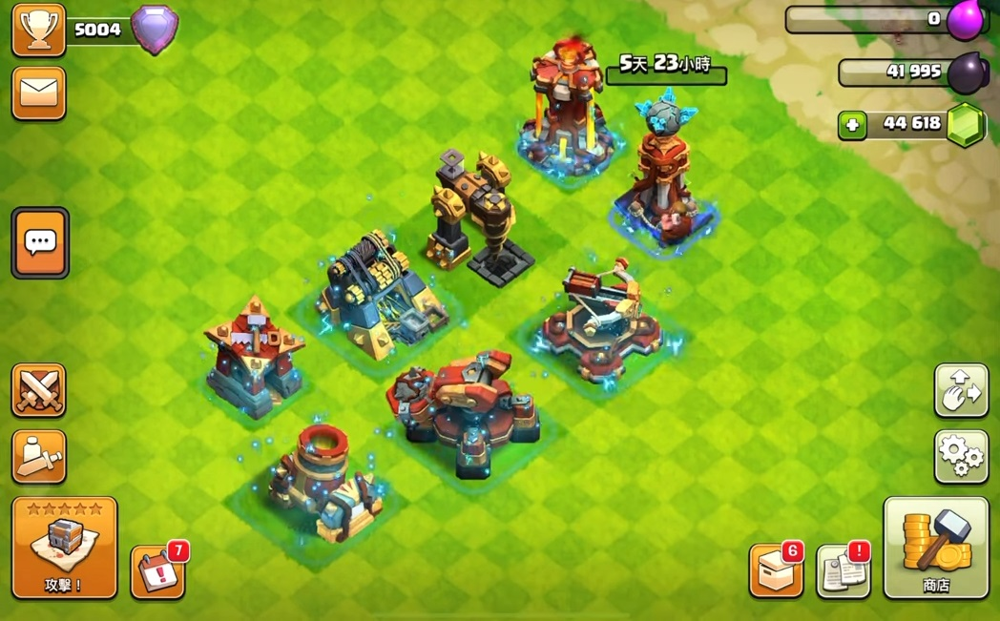
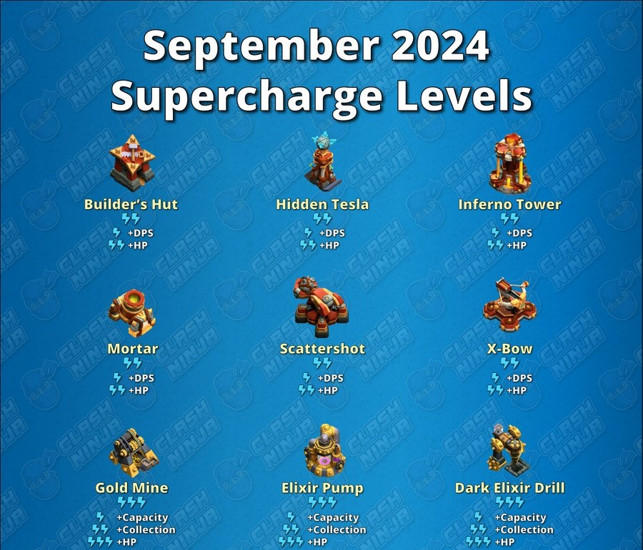

  
普通英雄裝備等級現在上限為15級。
史詩英雄裝備等級現在上限為21級。
進攻方英雄的每秒傷害（DPS）降低5%（原為降低15%）。
進攻方英雄的生命值（HP）降低5%（原為降低10%）。
防禦建築的每秒傷害（DPS）增加5%（無變更）。
部落首領和副首領可以在公告板上撰寫自訂消息，或使用部落描述作為公告的內容。此外，公告的背景圖像也可以自訂。
尋找部落的玩家將會看到最適合他們的部落公告，包括其他部落成員活動等各種遊戲會自動考慮的條件。
更改語言或家庭友善部落設置將會取消發布部落公告，公告需要重新發布。更改設置前會有一個確認對話框，提示公告將被取消發布。
玩家仍然可以通過部落名稱或部落標籤進行搜尋，也可以使用高級選項。
玩家只要符合部落的加入要求，就可以通過公告加入封閉或邀請制的部落，無需先發送加入請求。
 
 
從16本開始，超級充能是針對部分建築的新可選增益功能。它與普通升級有所不同：
小型：時間更短，成本更低，帶來的屬性提升也較小。 僅限滿級：只能在建築達到最高等級時進行超級充能。 臨時性：當建築的新等級發布時，之前在該等級進行的所有超級充能都會失效，建築也會失去其增益效果。 每個建築可以超級充能最多三次，每次都會增強不同的屬性，並為建築增加更強的閃電視覺效果！
要對建築進行超級充能，你需要使用一名建築工人並消耗一些資源。
 
魔法點心來了！
在9月尋寶活動期間，我們將推出一種全新且有趣的方式來獎勵每天進攻的玩家，提供臨時增益給建築工人、英雄、軍隊、裝備和研究！
魔法點心在24小時內會過期，無法像魔法物品那樣累積或出售，所以要快速使用它們！
它們會存放在專用的儲存空間內，當玩家獲得第一個魔法點心時，該儲存空間將會解鎖。
此次更新中將會有六種魔法點心：建築小吃、學習湯、力量小食、能量煎餅、訓練零食和部落城堡蛋糕。有關每種點心的詳細信息將在下方說明。
使用時：
未使用時：
他們的作用是什麼？
1.更新優化 新部落公告 困難模式更困難（clash of clans部落衝突）
2.新超級蓄能 新魔法零食（clash of clans部落衝突）
3.Sneak Peek #1: Clan Notice Board, QOL and other changes! (September 2024 Update)
4.Sneak Peek #2: Supercharge and Magic Snacks! (September 2024 Update)
5.Sept 2024 Sneak Peek 2: Supercharge Levels
6.Sept 2024 Sneak Peek 1: Economy Changes
7.September 2024 Balance Changes
8.Siege Machine Donation Level Cap Changes